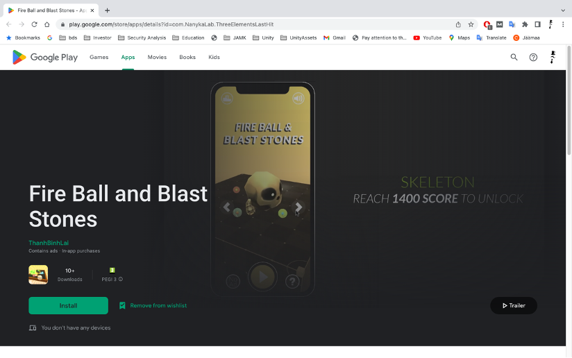
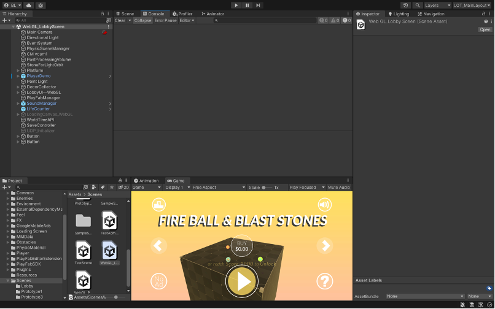
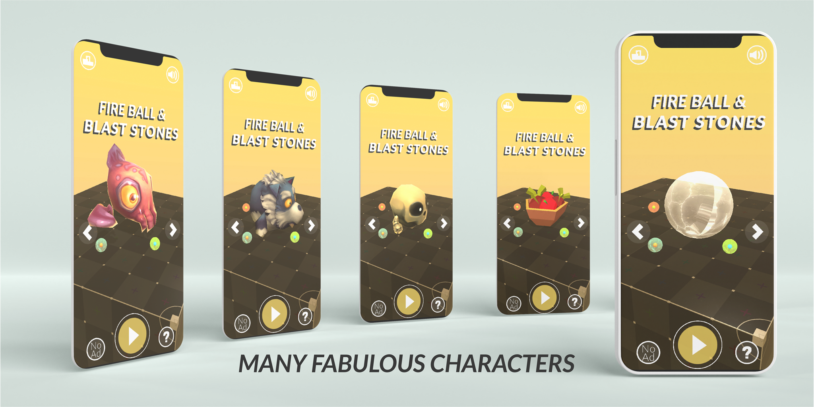
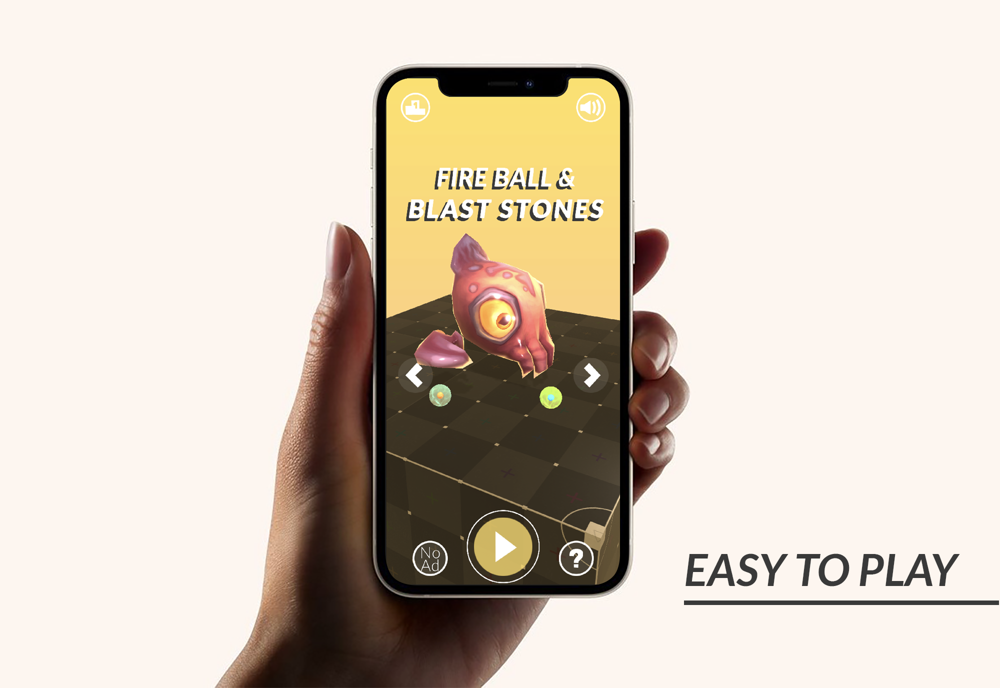

GENERAL INFORMATION
Jumpee Island, an individual project that combines the principles of reinforcement learning NPCs with the complexity of a turn-based game enriched with challenging puzzles, akin to a game of chess. The core objective of the game is to raise your island while safeguarding it from other players' invasions. In the backdrop, Unity Game Services serve as the backend solution to deliver LiveOps to players, adding an extra layer of dynamic engagement to this unique gaming experience.
- GooglePlayStore: GooglePlayStore link
- Github: Stone Smash Saga github
Demo video: Jumpee Island video
Screenshots
 
MY CONTRIBUTION
Game designer:> Gameplay and game mechanic design; level design.
Game programmer: Trajectory and shooting system; gameplay programming; UI; local saving system.
Game monetization: Building a monetization plan; and implementing in-app purchases and reward ads.
Technical Artist: Arrange lighting sources and handle lighting for game levels; design and implement particle system; feedback system design.
WHAT I TOOK AWAY
Game design procedural
Throughout the process of learning game design, I have created several essential documents, including the Game Concept, Asset and Inventory lists, Sprint Plan, and CDC Card. Initially, I had reservations about investing time in paperwork, fearing it might be a time-consuming endeavor. However, as I progressed through the project and encountered setbacks due to inadequate design documents, I came to a profound realization. While having a meticulous plan from the outset doesn't guarantee a successful project, I learned that not prioritizing a well-structured plan virtually assures the onset of failure. This experience has underscored the critical importance of careful planning in the game design process.
Balance between difficulty and player skill
Balancing in game design holds a pivotal role due to two primary reasons that drive player engagement and retention: frustration and boredom. These two factors are the core sources behind why individuals cease playing a game. Therefore, achieving the right balance is crucial in creating an enticing and enduring gaming experience.
F2P & Monetization
In implementing the Free-to-Play (F2P) monetization model for the game, I used a combination of ads and in-app purchases. However, this approach didn't perform as well as expected. I learned two important lessons: first, excessive ads can frustrate players, highlighting the need for careful ad placement. Second, for this game, the F2P strategy, offering most gameplay for free and charging for extended content, proved to be a more effective monetization method compared to relying solely on ads.
Tutorial Design
Mobile game marketing
In the realm of mobile game marketing, I've taken the initiative to create a marketing kit from scratch, comprising a compelling trailer video and attention-grabbing ad posters to capture the essence of our game and say 'hello world.' However, one of the significant hurdles I encountered was the selection of appropriate marketing channels. To tackle this challenge, I ventured into a variety of advertisement tools, thoroughly exploring their respective advantages and disadvantages, with a particular focus on App Store Optimization (ASO). In my perspective, the pinnacle of effective marketing remains the quality of the game itself, as it serves as the most powerful and persuasive marketing tool.
Tutorial Design
© BinhLai, 2021